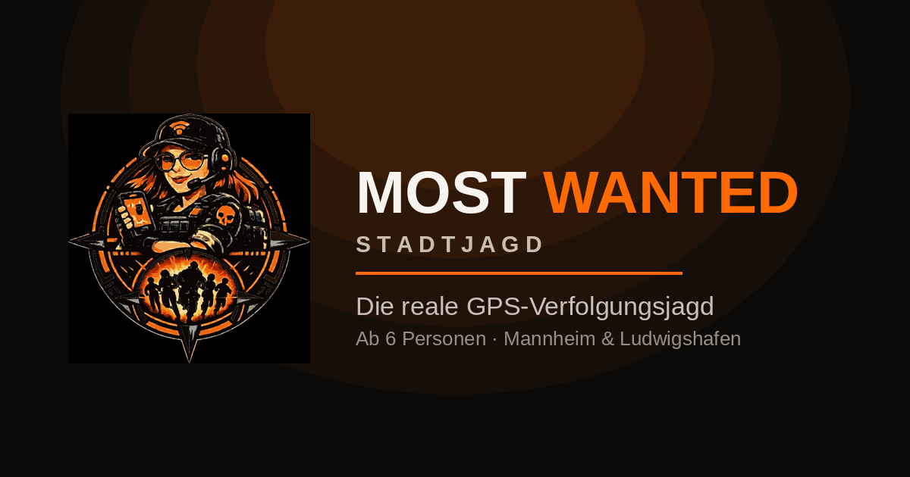

Eine Gruppe flieht, die andere jagt — quer durch Mannheim, Ludwigshafen oder eure eigene Stadt. Alle 60 Sekunden verrät die App, wo ihr gerade wart. Nicht, wo ihr jetzt seid. Der Rest ist Kopf, Tempo und die richtige Abkürzung.